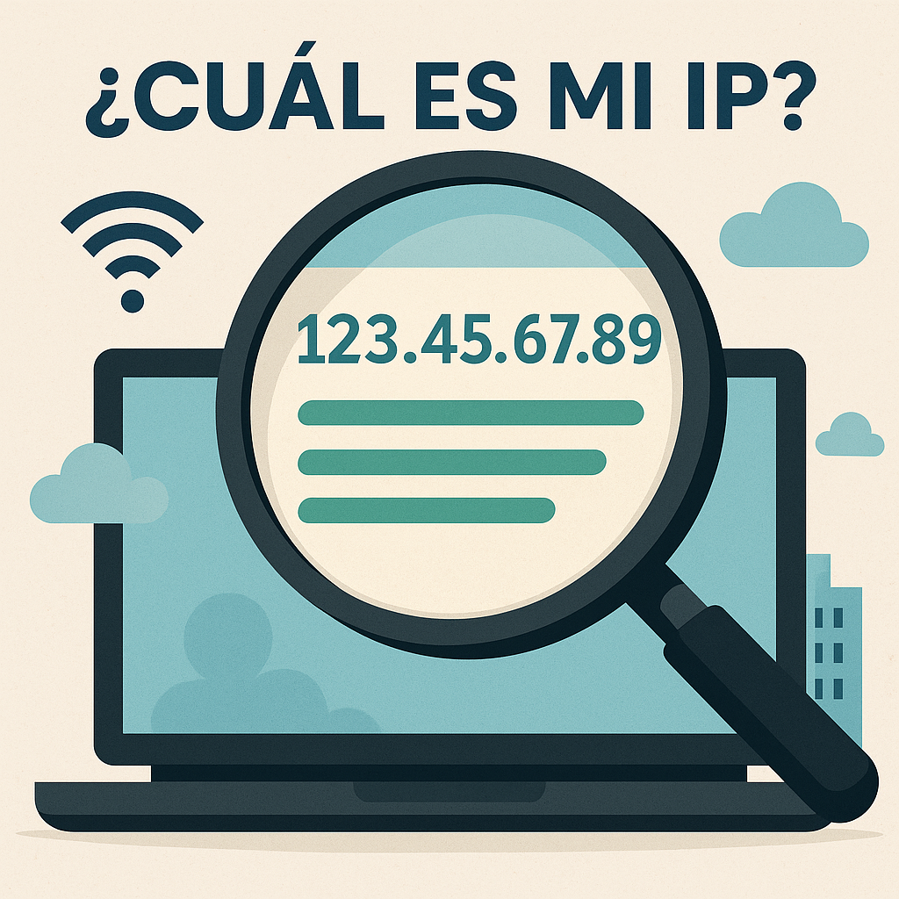

What is my IP and what is it for? Simple and practical explanation
🌐 Introduction
Have you ever wondered what an IP address is or why some websites say "Your IP is..."? In this article we explain in clear terms what your IP means, how to find yours, and what it's used for.
🔎 What is an IP address?
An IP address (Internet Protocol) is like your device's ID when it connects to the internet or a local network. It's a unique number that identifies your device and allows it to send and receive data correctly.
Example IP: 192.168.1.10 or 80.25.240.33
📶 Types of IP: public and private
- Public IP: identifies your connection on the internet. It's visible to the websites you visit.
- Private IP: used inside your home network (like the one your router gives to your phone or PC).
🧭 How to know what my IP is?
You can use our free tool: What is my IP?
It shows your public IP instantly with one click.
🛠️ What is your IP useful for?
- Troubleshooting connection issues
- Setting up servers or IP cameras
- Remote access to your network or devices
- Online gaming without NAT errors
🔁 Dynamic IP vs Static IP
- Dynamic IP: changes each time you restart your router or after a while. It's the most common type.
- Static IP: doesn't change. Useful for servers or stable remote access.
⚠️ Is your public IP dangerous?
Not necessarily, but it can reveal your approximate location. That's why many users use a VPN to hide it and protect their privacy.
❓ Frequently Asked Questions (FAQ)
Does my public IP change?
Yes, if it's dynamic. Check it multiple times during the day to confirm.
Can I change my public IP?
Yes. By restarting your router or using a VPN.
Can two devices have the same IP?
Only if they are in different networks (e.g., two phones with private IP 192.168.1.5).
✅ Conclusion
Knowing your IP is the first step to understanding how your connection works. It's useful for tech users and curious minds alike. Use our tool to check it anytime you want.